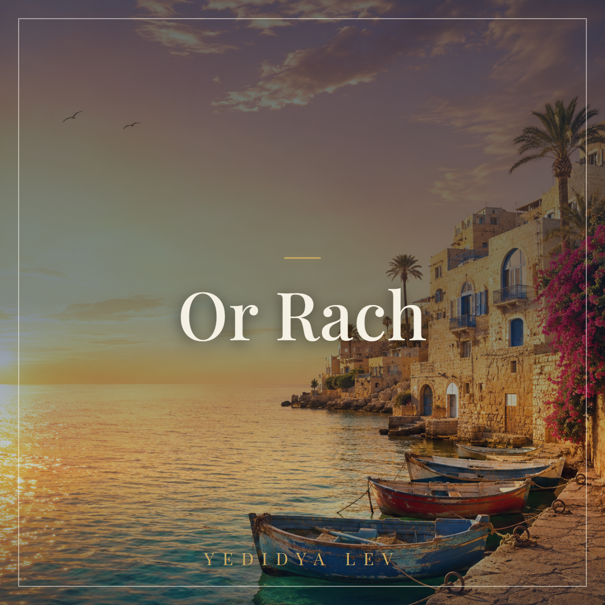

Schalom Israel · Album
Sanftes Licht
Zwanzig hebräische Lieder in einer einzigen, durchgehenden Sonnenuntergangs-Stimmung. Kein dramatischer Bogen, keine großen Höhepunkte. Eine Schleife, in die man eintritt und bleibt.
Lyrische Fragmente aus dem religiösen Alltag, kryptisch und sparsam. Wer mehr Theologie will, hört „Reschit Da'at". Wer feiern will, hört „Simchat Chaim". Wer einfach sein will, hört dieses Album.
„Or Rach" — sanftes Licht. Zwei Hebräisch-Worte, die man auch ohne Erklärung versteht: Licht, das nicht blendet. Eine Stimmung, kein Theorem. Das Album ist gemacht für die Stunde nach Schabbat-Beginn, für den langen Flug, für den späten Abend beim Tee, für die Zeit vor dem Schlaf.
Die Texte sind absichtlich knapp. Ein einziges Bild pro Strophe. Eine Kerze, die brennt. Ein Becher Wein, den man stumm hebt. Ein Brot, das in zwei Hälften gebrochen wird. Die Lieder erklären nichts und predigen nichts. Sie zeigen.
Israelischer Chill-out in der Tradition des Idan Raichel Project. Oud als Hauptmelodie-Instrument, getragen von warmen Synth-Pads. Sanfter Darbuka-Downtempo zwischen 70 und 90 BPM, Bouzouki und Mandoline als helle Akzente, Ney und Qanun für die orientalische Färbung. Klavier sparsam für die Chill-Tiefe.
Eine einzige warme Männer-Solostimme, oft halbgeflüstert, mit dezent kantoraler Färbung an den Phrasenenden. Sechs der zwanzig Tracks sind reine Instrumentals, die das Album atmen lassen.
Sofortiger Download nach dem Kauf. 20 Tracks als hochaufgelöste MP3-Dateien (320 kbps), mit eingebettetem Cover-Artwork. Lieferung über Digistore24.
€ 14,90
Jetzt kaufen